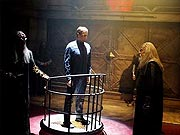
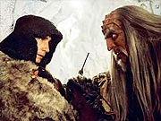
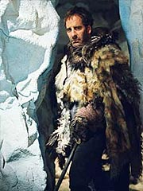
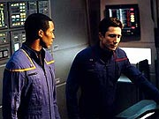
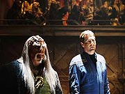

|
MANCHETE
DO EPISDIO
Julgamento
apresenta Klingons do
sculo 22 em homenagem clssica
Episdio
anterior | Prximo
episdio
Sinopse:
O capito Jonathan Archer levado a Qo'noS para se apresentar diante de uma corte Klingon, sob a acusao de ter protegido rebeldes e fomentado rebelio no Imprio. Apesar de se declarar inocente, o tribunal no parece estar muito disposto a ouvi-lo. O humano ento levado a uma cela para aguardar o momento do julgamento.
L ele recebe uma visita do doutor Phlox, que conseguiu autorizao dos Klingons para ir v-lo sob a alegao de o capito estar com uma doena potencialmente contagiosa. O mdico conta que os aliengenas autorizaram a presena da nave em rbita at que o julgamento seja concludo e diz a Archer que T'Pol e Trip esto trabalhando em todas as alternativas possveis para tir-lo dali. O capito passa a instruo de que a segurana da Enterprise deve ser prioridade mxima.
 Phlox ento retirado para que Archer possa conhecer seu advogado de defesa: Kolos. Seu suposto defensor, entretanto, no parece muito interessado em conhecer a verso do capito para o incidente que o levou ao julgamento, apenas instruindo seu "cliente" a no se manifestar.
A sesso comea e o promotor Orak, conhecido por seus sucessos em julgamentos anteriores, comea a apresentar seu caso contra Archer. Ele chama para depoimento Duras, ex-capito da nave imperial Borthas, agora rebaixado em posto. O Klingon alega ter perdido sua posio anterior aps o encontro com Archer. Segundo sua verso, a Enterprise teria se recusado a entregar os fugitivos do imprio, e, declarando morte ao Imprio Klingon, Archer teria iniciado um ataque, danificando o cruzador de batalha e escapando com os refns.
Archer tenta se expressar e dizer que Duras mentia, mas foi impedido por seu advogado e pelos seguranas da corte, que contiveram o capito com bastes eltricos. Quando chega a vez de Kolos apresentar seus argumentos, o advogado opta por no chamar ningum para testemunhar, irritando ainda mais o capito. O juiz pe a corte em recesso para que seja possvel analisar os fatos apresentados.
Archer levado de volta sua cela e expressa a Kolos todo o seu descontentamento. O advogado diz que tudo que fazia era uma tentativa de poupar a vida do humano, dizendo que o magistrado havia concordado em excluir a pena de morte da sentena caso o capito dissesse corte onde os renegados estariam escondidos. Archer se recusa, alegando que os aliengenas que a Enterprise resgatou eram apenas refugiados, pertencentes a um planeta anexado pelo Imprio, mas depois abandonado.
O capito no consegue acreditar que Kolos possa agir to complacentemente, diante das injustias cometidas. Irritado, o Klingon conta que nem sempre foi assim --houve um tempo em que as cortes estavam procura de justia, e no eram apenas um instrumento til classe guerreira. Archer acaba por convencer Kolos de que ele precisa recordar esses fatos ao tribunal.
 Incentivado, Kolos resolve defender ativamente seu caso, pedindo para chamar Archer para depor. O humano apresenta sua verso e seu advogado complementa lembrando que Archer j havia interferido em assuntos Klingons antes, evitando uma guerra civil engendrada pelos Sulibans e salvando uma nave Klingon deriva. Segundo o defensor, Archer s seria culpado de interferir em questes que no lhe dizem respeito, mas no de fomentar a rebelio.
Sensibilizado pelos novos fatos, o magistrado decide comutar a sentena de morte. Em vez disso, Archer ser condenado a passar o resto da vida nas minas de diltio de Rura Penthe. Kolos fica revoltado com a deciso --que ele considera uma pena de morte camuflada-- e protesta, mas isso faz com que o juiz decida conden-lo a acompanhar Archer em Rura Penthe por um ano.
Enquanto isso, a Enterprise informada da deciso e instruda a deixar o territrio Klingon. Trip quer promover uma tentativa de resgate de Archer, mas T'Pol diz que isso est fora de questo. Em vez disso, ela vai buscar meios diplomticos junto ao Alto Comando Vulcano para obter a libertao do capito.
Archer e Kolos so levados colnia penal e passam por maus bocados l, quando so surpreendidos por Malcolm Reed, que revela ao capito que T'Pol teve sucesso e, via suborno de oficiais Klingons ligados ao ministrio da Segurana, obteve uma forma de providenciar a fuga da priso. Archer chama Kolos a ir com eles, mas o Klingon decide ficar, na tentativa de um dia fomentar a restaurao da honra e da justia entre seu povo.
Comentrios:
 Pode parecer que no, mas
"Judgment" no sobre Archer e o drama do sistema de justia Klingon. Em vez disso, trata-se de uma histria sobre um personagem aliengena que foge ao paradigma clssico dos velhos viles (e depois aliados) de
Jornada nas Estrelas. Sem dvida alguma, Kolos o verdadeiro ponto focal da trama.
Por sorte, o ator encarregado de encarnar um dos mais interessantes e intrincados personagens a aparecerem em
Enterprise at este ponto extremamente capaz. J.G. Hertzler j havia feito fama no Imprio, interpretando o general (e depois chanceler) Martok, de
Deep Space Nine. Apesar de ser sua segunda experincia como um Klingon, Hertzler mostra muita capacidade para diferenciar seus dois personagens. Kolos e Martok so bastante distintos, e a maquiagem de Michael Westmore tambm ajuda bastante a criar essa sensao de diferena, apesar do tom de voz sonoro e absolutamente caracterstico do ator.
Kolos nos apresenta um outro lado do Imprio Klingon, um jamais visto na histria de
Jornada nas Estrelas: o dos "perdedores" da luta de classes interna que fez com que os guerreiros se tornassem os lderes absolutos daquela sociedade. De forma sutil e bem trabalhada, o episdio faz eco tanto aos Klingons desonrados e at covardes da
Srie Clssica como ao governo viciado e corrupto do Imprio observado durante a
Nova Gerao.
Uma boa ponte de contato para estabelecer ainda mais firmeza nessa analogia o uso do personagem Duras (muito provavelmente um ancestral do homnimo visto em
A Nova Gerao), que aqui filho de Toral (em "Redemption, Part
I", no sculo 24, o outro Toral que filho do outro Duras). E as referncias no param por a: a nave do Duras do sculo 22 a Borthas, mesmo nome que tem a nave do chanceler Gowron no sculo 24.
Se essas referncias Nova Gerao do algum sabor aos detalhes da histria, bvio que a principal fonte que serviu ao roteirista David Goodman foi o sexto filme para o cinema,
"A Terra Desconhecida". Tanto os procedimentos de um julgamento Klingon quanto o estabelecimento de Rura Penthe foram fruto daquele longa-metragem.
 Enquanto o uso do julgamento parece interessante e rende uma boa dose de nostalgia no f, a meno a Rura Penthe no parece to adequada --afinal de contas, na poca de Kirk, supostamente ningum havia escapado da colnia penal antes. Ao fazer com que Archer se torne o primeiro a realizar a faanha, alm de evidenciar o fato de que todos os tripulantes da Enterprise do sculo 23 parecem ter faltado aula de histria ao falar de Rura Penthe, o episdio acaba desmerecendo a fuga espetacular de Kirk durante o filme.
Alis, se h um problema com esse episdio, a forma como seu desfecho foi trabalhado. Claramente, o objetivo foi gastar todos os minutos disponveis com o julgamento, que seria o foco dramtico do episdio. A fuga de Rura Penthe foi s um pequeno arranjo de arte escapista para levar Archer de volta Enterprise para o segmento seguinte. Com certeza teria sido melhor deixar a fuga das minas para uma continuao, criando um bom episdio duplo, com tempo para desenvolver adequadamente a aventura e mostrar tudo que T'Pol precisou fazer, fora de tela, para obter a liberao de seu capito.
Outro problema de ter usado Rura Penthe foi a escala desproporcional dos oramentos de um filme e de um episdio de TV. As minas vistas durante
"A Terra Desconhecida" so impressionantes, sombrias e extremamente realistas. J os cenrios de
"Judgment", apesar de serem bons para os padres de um episdio mdio de
Enterprise, criam um contraste absurdo com o que foi visto no longa-metragem. No engana de jeito nenhum, mesmo considerando que aquela a Rura Penthe do sculo 22.
Felizmente o problema no se repete com as cenas do julgamento. Vrias trucagens de efeitos especiais ajudem a "ampliar" o ambiente para atingir um patamar similar ao visto no filme, e os cenrios reais em si so bastante trabalhados, assim como os figurinos e os ngulos de cmera cuidadosamente escolhidos por James Conway. Tudo isso consegue reproduzir de forma agradvel e satisfatria a atmosfera de um julgamento Klingon.
 Depois de Kolos, bvio que o grande destaque do episdio o capito Archer. Scott Bakula mais uma vez consegue conduzir seu personagem a contento, usando as habilidades cada vez mais afiadas do capito em manipular personagens que, de outro modo, acabariam agindo contra seus melhores interesses. Apesar de tudo isso, no h muito de importante para o capito fazer, e suas melhores cenas so justamente as que mostram com mais fora o ntimo de Kolos, reforando a impresso de ser este um episdio realmente "orientado a personagem convidado".
Alguns problemas menores lidam com a consistncia do enredo em si. Ningum chega a saber, por exemplo, como Archer foi capturado pelos Klingons e levado a julgamento, e fica difcil acreditar que o Imprio, julgando o capito humano, aceitaria tranquilamente a presena da Enterprise em rbita, sem conduzir nenhuma ao hostil contra a nave.
Apesar disso, seria mentira se eu dissesse que "Judgment" um episdio desinteressante ou que no merece uma segunda olhada. Com suas referncias interessantes, seus insights sobre os Klingons do sculo 22 e a promessa de um desdobramento com
"Bounty", mais frente, na temporada, o segmento certamente um dos que valem a pena nessa sequncia final do segundo ano da srie. Com acertos e erros, mas ainda assim interessante.
Citaes:
Kolos - "Klingons were once a great society, when honor was earned through integrity and acts of true courage, not senseless bloodshed."
("Os Klingons um dia foram uma grande sociedade, em que honra era conquistada com integridade e atos de verdadeira coragem, no derramamentos de sangue sem sentido.")
Kolos - "So, are all humans like this?"
("Ento, todos os humanos so assim?")
Archer - "Like what? Fair?"
("Assim como? Justos?")
Kolos - "Stupid!"
("Estpidos!")
Trivia:
 A msica do episdio foi composta por Velton Ray Bunch, que trabalhou em "Quantum Leap" e j fez a trilha de episdios como
"Silent Enemy" e "Marauders". A gravao da trilha aqui ocorreu em 19 de maro de 2003. As filmagens do episdio em si ocorreram de 17 a 27 de janeiro de 2003.
A msica do episdio foi composta por Velton Ray Bunch, que trabalhou em "Quantum Leap" e j fez a trilha de episdios como
"Silent Enemy" e "Marauders". A gravao da trilha aqui ocorreu em 19 de maro de 2003. As filmagens do episdio em si ocorreram de 17 a 27 de janeiro de 2003.
O episdio tem um Klingon chamado Duras, provavelmente um parente do Duras que participou da conspirao para incriminar o pai de Worf, conforme visto nos episdios
"Sins of the Father" e "Reunion", da Nova Gerao.
J.G. Hertzler conhecido dos fs de Jornada, tendo interpretado o general (e depois chanceler) Martok, em
Deep Space Nine. Ele tambm apareceu como o capito Vulcano em
"Emissary" (Deep Space Nine), como um transmorfo em "Chimera"
(Deep Space Nine) e como um Hirogen em "Tsunkatse" (Voyager).
John Vickery apareceu em Deep Space Nine como o Cardassiano gul Rusot. Ele j havia interpretado Andrus Hagan, em
"Night Terrors" (A Nova Gerao). Ele tambm participou da srie "Babylon 5", como o Minbari Neroon.
Daniel Riordan interpretou Rondon em "Coming of Age"
(A Nova Gerao) e um guarda em "Progress" (Deep Space
Nine).
O tribunal Klingon foi construdo para parecer com o que levou Kirk e McCoy a julgamento em
"Jornada nas Estrelas VI: A Terra Desconhecida". Outras referncias a esse filme tambm aparecem, como a sentena de Archer a priso perptua em Rura Penthe.
J.G. Hertzler gostou do novo trabalho. "O personagem que eu fiz em
Enterprise fabuloso, realmente fabuloso. Eu adoro Martok e o personagem que fao em
Enterprise -- claro, sou eu o fazendo -- no inteiramente livre de Martokismos. Ele um personagem bem diferente, ele um advogado, no um guerreiro, mas ele tem o mesmo tipo de alma. O que ele acredita no certo e no errado."
Para Brannon Braga, o resultado no poderia ter sido melhor.
"'Judgment' foi um desses casos em que tudo se junta. Foi uma oportunidade para se debruar em como os Klingons eram durante esse perodo na histria. A classe guerreira tomou o poder e comeou a corromper uma grande sociedade e vir-la para uma direo imperialista. Foi um insight interessante da cultura Klingon. Claro, a tragdia que -- como os fs de
Jornada nas Estrelas sabem -- esse pobre rapaz, Kolos, est condenado, porque eles nunca vo mudar."
Ficha
tcnica:
Histria de Taylor Elmore & David A. Goodman
Roteiro de David A. Goodman
Direo de James L. Conway
Exibido em 09/04/2003
Produo:
045
Elenco:
Scott
Bakula como Jonathan Archer
Jolene Blalock como
T'Pol
John Billingsley
como Phlox
Anthony Montgomery
como Travis Mayweather
Connor Trinneer como
Charlie 'Trip' Tucker III
Dominic Keating como
Malcolm Reed
Linda Park como Hoshi Sato
Elenco convidado:
J.G. Hertzler como Kolos
Daniel Riordan como Duras
Victor Talmadge como Asahf
John Vickery como Orak
Helen Cates como primeiro-oficial Klingon
D.J. Lockhart como guarda da cela
Granville Van Dusen como magistrado
Danny Kolker como guarda
Episdio
anterior | Prximo
episdio
|